![]()
seed <- 14Update: I made a little shiny app based on this post: djnavarro.shinyapps.io/shattered-landscapes (source code). It doesn’t implement the complete system because rayshader causes out of memory problems for my free tier shinyapps account, but in other respects it’s the same thing.
Magic doesn’t come from talent. It comes from pain.
– Eliot Waugh1
In the last few weeks I’ve been tinkering with a generative art system I ended up calling Broken Lands. It creates maps of bizarre and impossible landscapes in R, using the ambient package to generate the topography, and rayshader to render shadows cast by a hypothetical light source. It creates images like these:


To my eye, at least, these images are both beautiful and tragic. I cannot help but interpret them as coastal landscapes in an alien geography of some kind, a land that has suffered some cataclysm like the Doom of Valyria or the Fall of Istar. The contours feel too contorted to be the result of any terrestrial process, and – again, by my interpretation – there’s a tension between the smoothness of the individual contours and the jagged, chaotic structure of the landscape overall.
But what would I know? I wrote the code that makes the system work, but I don’t have a monopoly of interpretation of the images. Death of the author and all that. Barthes would call me the “scriptor” rather than the author, I suppose, which honestly feels about right for generative art. So yeah. The pieces are what they are, quite separate from the artist and from the process by which the system was constructed.
That said, if you’re familiar with the R ecosystem you can probably take an educated guess about how I made these pieces. As mentioned at the start, the spatial noise patterns are created using the ambient package and the shadows and three-dimensional look are provided by rayshader. I wrote about both of these packages in my workshop on generative art in R workshop (specifically: ambient art, rayshader art), and those tutorials provide a lot of clues about how these pieces are made. But there are also some details I haven’t talked about before, and in any case it’s always fun to write about art.
Starting simple
I’ll start by building a simple system that doesn’t go very far beyond what I covered in the Art From Code workshop. It’s built using three functions. There’s a new_grid() function used to define a grid of x and y coordinates, a generate_simplex() function used to create spatial noise patterns on such a grid, and a render() function used to create an image. First, the new_grid() function:
new_grid <- function(n = 1000) {
ambient::long_grid(
x = seq(0, 1, length.out = n),
y = seq(0, 1, length.out = n)
)
}
new_grid()# A tibble: 1,000,000 × 2
x y
<dbl> <dbl>
1 0 0
2 0 0.00100
3 0 0.00200
4 0 0.00300
5 0 0.00400
6 0 0.00501
7 0 0.00601
8 0 0.00701
9 0 0.00801
10 0 0.00901
# … with 999,990 more rowsThe output appears to be a tibble that contains x and y coordinates.2 This defines the spatial locations that we’ll use to create the image, but we’ll need to assign colours to each of those locations.
Painting a canvas with spatial noise
In order to do this, we’ll write a function called generate_simplex() that generates interesting patterns of spatial noise:
generate_simplex <- function(x, y, seed = NULL) {
if(!is.null(seed)) {
set.seed(seed)
}
ambient::fracture(
noise = ambient::gen_simplex,
fractal = ambient::billow,
octaves = 10,
freq_init = .02,
frequency = ~ . * 2,
gain_init = 1,
gain = ~ . * .8,
x = x,
y = y
)
}The particular choices I’ve made here came about from trial and error. I played around with a lot of different settings when creating generative art in this style, and these were things I liked. I’m not going to dive into the details here: you can find out more by reading the tutorial on spatial noise art I linked to earlier. For the current post, all I want to highlight is that we can use this function to add a new column to the canvas that defines our artwork:
canvas <- new_grid() |>
dplyr::mutate(paint = generate_simplex(x, y, seed = seed))
canvas# A tibble: 1,000,000 × 3
x y paint
<dbl> <dbl> <dbl>
1 0 0 -3.96
2 0 0.00100 -3.95
3 0 0.00200 -3.95
4 0 0.00300 -3.94
5 0 0.00400 -3.93
6 0 0.00501 -3.92
7 0 0.00601 -3.91
8 0 0.00701 -3.91
9 0 0.00801 -3.90
10 0 0.00901 -3.89
# … with 999,990 more rowsThis canvas object is structured like a lookup table: it’s a data frame with columns specifying x and y coordinates, and it contains a third column that specifies the colour of “paint” that needs to be applied at each coordinate. However, it’s a very structured data frame because the x and y values form a grid. This makes straightforward to flip from this format to a “bitmap” matrix format:3
bitmap <- canvas |> as.array(value = paint)
bitmap[1:6, 1:6] x
y [,1] [,2] [,3] [,4] [,5] [,6]
[1,] -3.963129 -3.931507 -3.899957 -3.868550 -3.837357 -3.806447
[2,] -3.954987 -3.932781 -3.901242 -3.869845 -3.838662 -3.807762
[3,] -3.946846 -3.924674 -3.902573 -3.871211 -3.840061 -3.809194
[4,] -3.938708 -3.916594 -3.894550 -3.872644 -3.841552 -3.810740
[5,] -3.930575 -3.908541 -3.886577 -3.864752 -3.843132 -3.812398
[6,] -3.922448 -3.900516 -3.878655 -3.856932 -3.835414 -3.814166A grid of numbers isn’t very pretty to look at, but we will need to create this matrix representation before passing the data to rayshader later. But I’m getting ahead of myself. For now, we can use the image() function to render an image from matrix-formatted data:
canvas |>
as.array(value = paint) |>
image(axes = FALSE, asp = 1, useRaster = TRUE)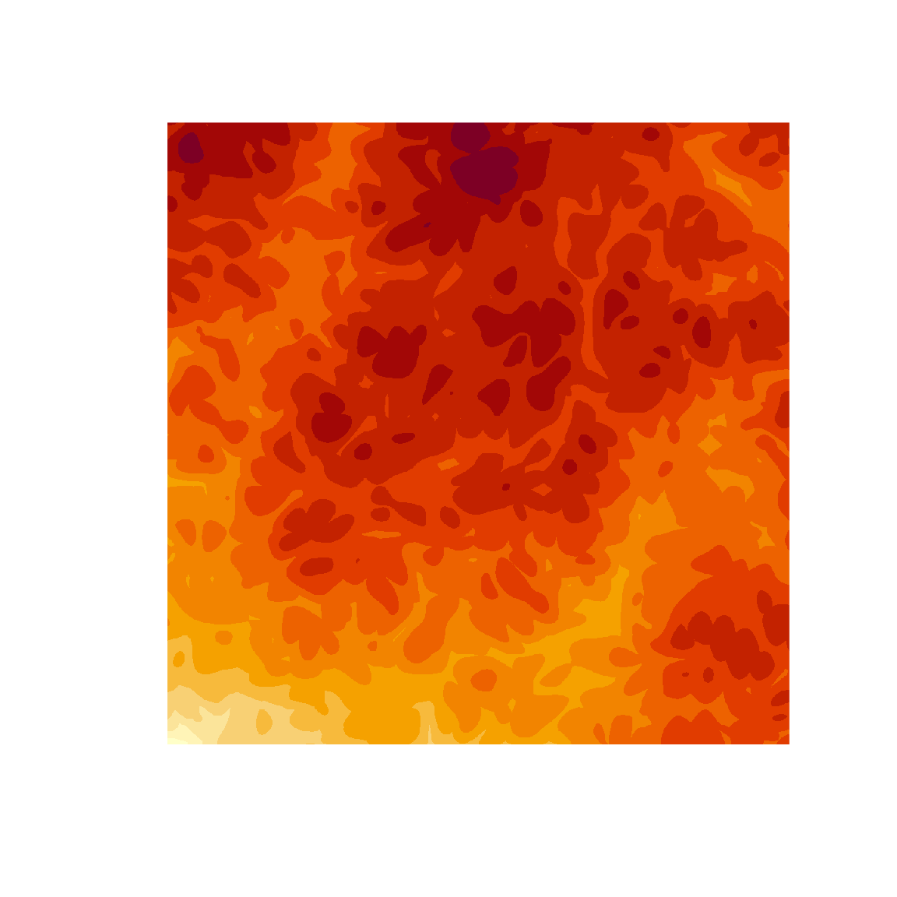
We’re a long way from our goal, but at least we now have an output that looks like art rather than a matrix of numbers. It’s a start!
Casting shadows across the landscape
The next step in the process is to define a render() function that will take an “elevation” matrix as input, but instead of drawing a “heat map” like image() does, it renders it as a three-dimensional topographic map with shadows cast by a hypothetical light source. This is surprisingly easy to do using rayshader. Here’s the function I’ll use in this post:
render <- function(mat, shades = NULL, zscale = .005) {
if(is.null(shades)) {
n <- length(unique(mat))
shades <- hcl.colors(n, "YlOrRd", rev = TRUE)
}
rayshader::height_shade(
heightmap = mat,
texture = shades
) |>
rayshader::add_shadow(
shadowmap = rayshader::ray_shade(
heightmap = mat,
sunaltitude = 50,
sunangle = 80,
multicore = TRUE,
zscale = zscale
),
max_darken = .2
) |>
rayshader::plot_map()
}I’m not going to go into the specifics: you can find out more by reading the tutorial on rayshader art I linked to earlier. For this post, I’m simply going to show you what it does. Taking the canvas data as input, we first use as.array() to switch from a “data frame style” representation to a “matrix style” representation, and then pass the matrix to render():
canvas |>
as.array(value = paint) |>
render()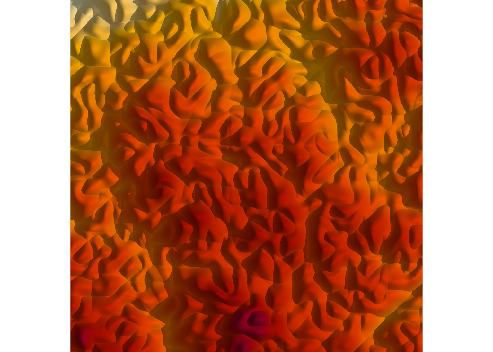
Again, still a long way from our desired goal, but we are making progress. Thanks to rayshader, we have output that looks like a shaded topographic map.
Making islands from the landscape
At this point we have the ability to generate landscapes, but the images just look like a bunch of hills. They don’t have the “coastal” feeling that the original images did. We can create islands by setting a “sea level”. You can do this in a sophisticated way in rayshader using detect_water() and add_water(), but that’s overkill for our purposes. All we really want to do is imagine setting a sea level such that about half the image is “water” and half the image is “land”. To do that we just calculate the median value in the original data:
sea_level <- median(canvas$paint)From there it’s an exercise in using dplyr. Using mutate() we create a new “islands” column whose value is equal to the original value or the sea level, whichever is higher:
canvas |>
dplyr::mutate(
islands = dplyr::if_else(
condition = paint < sea_level,
true = sea_level,
false = paint
)
) |>
as.array(value = islands) |>
render()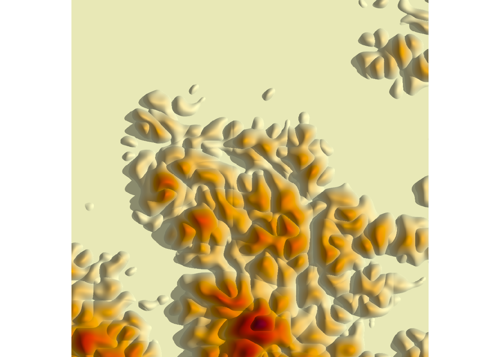
Et voilà! We have a generative art system that creates fictitious topographic maps of coastal islands. It’s still not quite the same thing as the original, but it’s kind of a nice system in itself. If you want to play with it, the complete source code for generating this image is included in the islands.R script accompanying this post.
Tweaking the spatial noise generator
If you do end up playing around, a really useful way to create variations on this system is to modify the function that generates the spatial noise patterns. For example, this generate_fancy_noise() function is awfully similar to the noise generator I used in the Broken Lands series:
generate_fancy_noise <- function(x, y, seed = NULL) {
if(!is.null(seed)) {
set.seed(seed)
}
z <- ambient::fracture(
noise = ambient::gen_worley,
fractal = ambient::billow,
octaves = 8,
freq_init = .1,
frequency = ~ . * 2,
gain_init = 3,
gain = ~ . * .5,
value = "distance2",
x = x,
y = y
)
ambient::fracture(
noise = ambient::gen_simplex,
fractal = ambient::billow,
octaves = 10,
freq_init = .02,
frequency = ~ . * 2,
gain_init = 1,
gain = ~ . * .8,
x = x + z,
y = y + z
)
}Here it is in action:
new_grid() |>
dplyr::mutate(
height = generate_fancy_noise(x, y, seed = seed),
islands = dplyr::if_else(
condition = height < median(height),
true = median(height),
false = height
)
) |>
as.array(value = islands) |>
render(zscale = .01)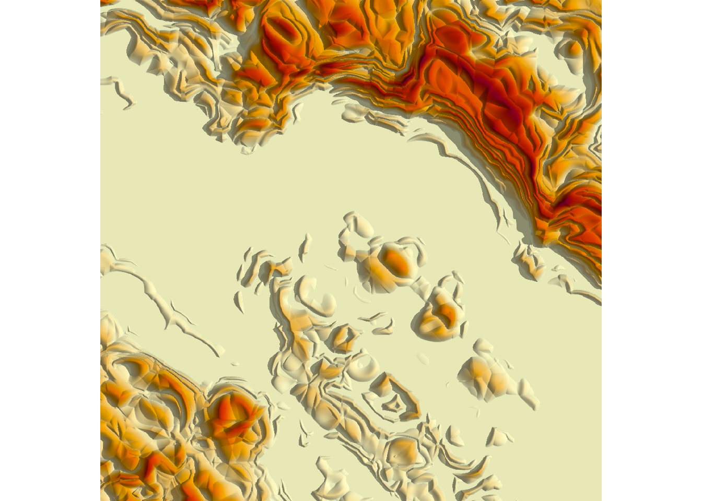
Very pretty. I suspect that had I isolated this particular noise generator earlier in the artistic process – rather than figuring out in hindsight that this was what I’d been using all along – I might have stopped here, and not bothered with any of the other tricks that I used.4 But of course this is a post-mortem deconstruction, not a description of the bizarrely tangled artistic process I actually followed, so there are more layers to come…
Queering geography
The final image in the last section captures something about the overall structure of the Broken Lands images, but it feels wrong in the particulars. It’s too smooth, too fluid, too… natural. It doesn’t have the same feel as the originals. I don’t have the same feeling of alienness that the original pieces have. Where does that not-quite-real feeling come from?
The answer to this involves every generative artists favourite trick: curl fields. If you’ve read the tutorial articles I linked to earlier, you’ve encountered these before so I won’t repeat myself by explaining yet again what a curl field is. What I’ll do instead is write a generate_curl() function that takes the original grid of coordinates (in the “base” space) and transforms them to a new set of points (in an “embedding” space) using a curl transformation:5
generate_curl <- function(x, y, seed = NULL) {
if(!is.null(seed)) {
set.seed(seed)
}
ambient::curl_noise(
generator = ambient::fracture,
noise = ambient::gen_simplex,
fractal = ambient::fbm,
octaves = 3,
frequency = ~ . * 2,
freq_init = .3,
gain_init = 1,
gain = ~ . * .5,
x = x,
y = y
)
}Here’s what happens when we apply this function:
grid <- new_grid()
coords <- generate_curl(grid$x, grid$y, seed = seed)
head(coords) x y
1 1.417494e-07 2.625000
2 4.275159e-05 2.624981
3 1.705772e-04 2.624924
4 3.836068e-04 2.624829
5 6.818209e-04 2.624697
6 1.065192e-03 2.624526The code here is slightly unpleasant, yes, but I’ll do it in a slightly cleaner way in a moment. What matters right now is the fact that the coords data frame is a transformed version of the grid data. The original (x,y) coordinates in the base space have been transformed to some (x,y) coordinates in some new space.
A slightly cleaner way of doing this – keeping both the original coordinates and the transformed values – would be as follows:
canvas <- grid |>
dplyr::mutate(
curl_x = coords$x,
curl_y = coords$y
)
canvas# A tibble: 1,000,000 × 4
x y curl_x curl_y
<dbl> <dbl> <dbl> <dbl>
1 0 0 0.000000142 2.62
2 0 0.00100 0.0000428 2.62
3 0 0.00200 0.000171 2.62
4 0 0.00300 0.000384 2.62
5 0 0.00400 0.000682 2.62
6 0 0.00501 0.00107 2.62
7 0 0.00601 0.00153 2.62
8 0 0.00701 0.00209 2.62
9 0 0.00801 0.00273 2.62
10 0 0.00901 0.00345 2.62
# … with 999,990 more rowsOkay that’s nice, but what exactly are these “curl transformed” values? What do they look like? Fair question. Here’s a plot showing what has happened to our nice rectangular grid after the transformation…
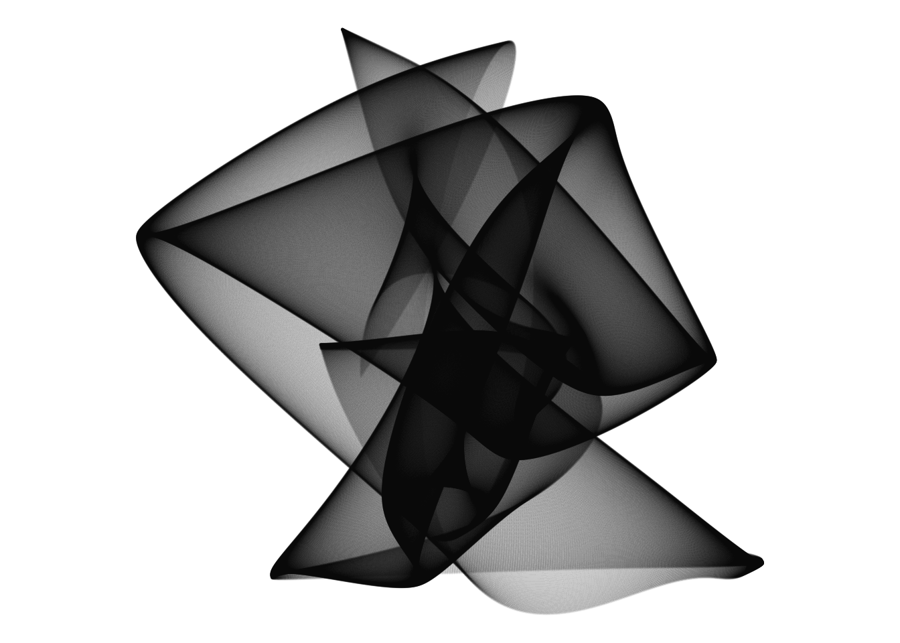
This image has an evocative feel, right? Like I’ve taken a regular square sheet of fabric and folded or transformed it in some strange way to create an “embedded” manifold? Well, yeah. That’s precisely what I’ve done.
Our noise operations will be specified on this transformed/embedded manifold, but – to reveal the ending slightly too soon – the final image will be defined on the base space. The code below shows how to apply the noise operations in the embedding space:
canvas <- canvas |>
dplyr::mutate(
height = generate_fancy_noise(curl_x, curl_y, seed = seed),
islands = dplyr::if_else(
condition = height < median(height),
true = median(height),
false = height
)
)
canvas# A tibble: 1,000,000 × 6
x y curl_x curl_y height islands
<dbl> <dbl> <dbl> <dbl> <dbl> <dbl>
1 0 0 0.000000142 2.62 -0.676 -0.676
2 0 0.00100 0.0000428 2.62 -0.675 -0.675
3 0 0.00200 0.000171 2.62 -0.674 -0.674
4 0 0.00300 0.000384 2.62 -0.672 -0.672
5 0 0.00400 0.000682 2.62 -0.670 -0.670
6 0 0.00501 0.00107 2.62 -0.667 -0.667
7 0 0.00601 0.00153 2.62 -0.664 -0.664
8 0 0.00701 0.00209 2.62 -0.662 -0.662
9 0 0.00801 0.00273 2.62 -0.660 -0.660
10 0 0.00901 0.00345 2.62 -0.658 -0.658
# … with 999,990 more rowsJust to give you a sense of what that looks like in the embedding space, here’s what happens when we redraw the “manifold” plot from above, with each point coloured using the value of the “islands” variable:
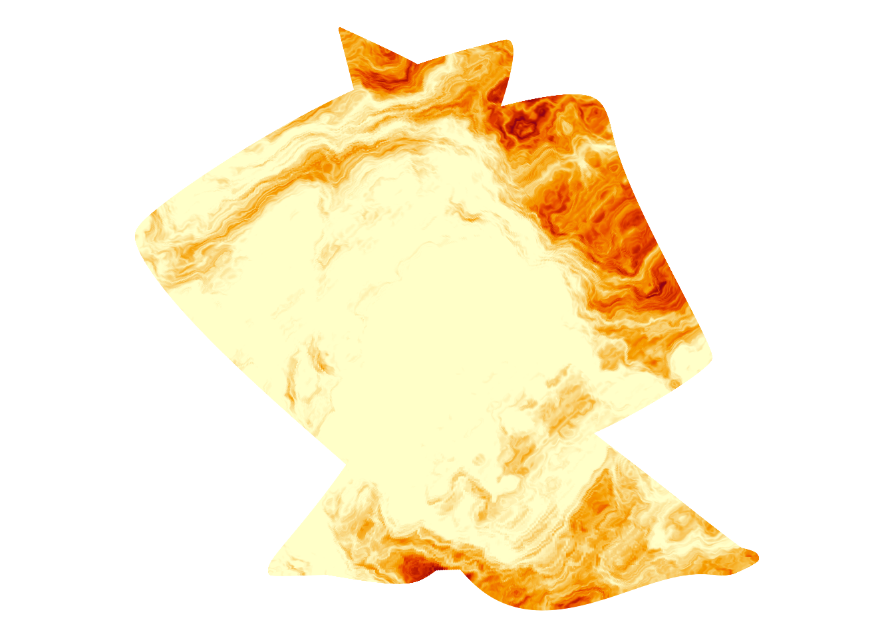
You can sort of see what’s going on here. We have a spatial noise pattern that generated the topography that I showed in the last section, but it’s defined on the embedding space. Our base space is like a rectangular fabric that has been laid and folded over and over onto this embedding space, and then we’ve spray painted this pattern onto the fabric.6 7 8 When we unfold the spray painted fabric and lay it flat again, this is what we get:
canvas |>
as.array(value = islands) |>
image(axes = FALSE, asp = 1, useRaster = TRUE)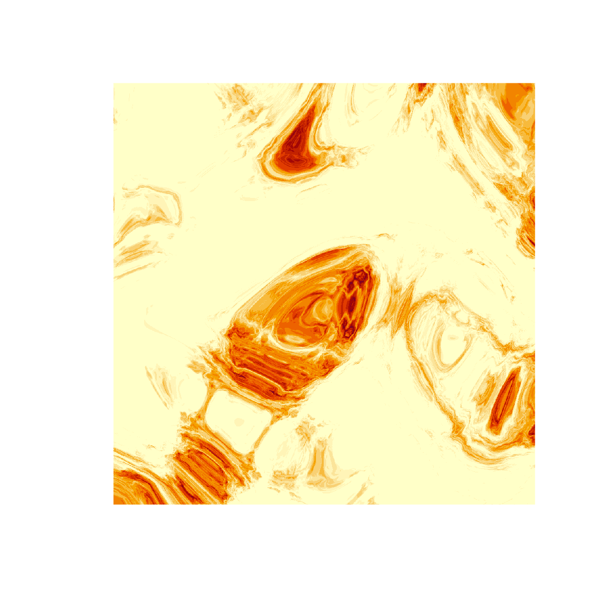
It’s a bit like tie-dyeing I guess? That’s what it feels like to me. I’m taking something regular, scrunching it up in a strange way, and then applying the colours to the scrunched up object before unfolding it.
In any case, we can use our render() function to add shadows with rayshader:
canvas |>
as.array(value = islands) |>
render(zscale = .05)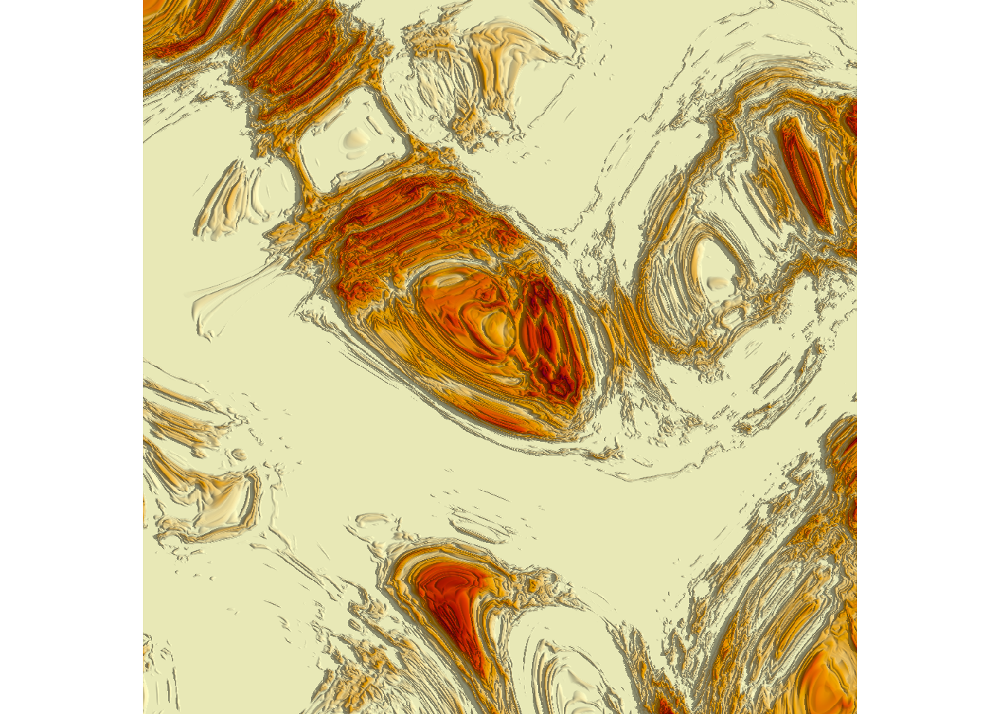
Okay now that feels like an alien geography to me! It still doesn’t look at all like our final images, but it has the right feel to it. Yes, it’s still a geography of sorts, but it feels stretched and twisted in an unnatural way. It feels… well, it feels painful. Nothing like this can occur naturally without the action of some catastrophic process. That’s what it feels like to me. The “brokenness” of the original images is created by this transformation: natural-ish patterns imposed on a twisted space create bizarre and alien patterns when those contortions are unfolded. It feels weird… it feels strange… it feels queer.9
Artistic trickery
The last image in the previous section doesn’t look all that much like the Broken Lands pieces, but – perhaps surprisingly – we’re weirdly close to creating something that really does look like those pieces. There are no deep insights left to explore. From here on out, it’s really just a matter of applying a few artistic tricks. To be precise, there are three little tricks left to document.
Be discre[et|te]
The first trick is discretisation. So far we’ve been creating images in which the “elevation” of the landscapes vary smoothly. The Broken Lands images don’t do that. Instead, there is a distinct feeling that the lands are terraced. In the original pieces there’s that same unnatural terracing that that you see in open cut mining.10 Creating that look in this system is not difficult. First, I’ll define a discretise() function that takes a continuously-varying vector as input, cuts it into n distinct levels that vary in value between 0 and 1, and returns the discretised values:
discretise <- function(x, n) {
round(ambient::normalise(x) * n) / n
}Here’s an example in which 100 normally distributed numbers are sliced into 5 levels:
discretise(rnorm(100), 5) [1] 0.6 0.8 0.2 0.4 0.6 0.4 0.6 0.4 0.8 0.6 0.4 0.2 0.2 0.4 0.6 0.6 0.6
[18] 0.4 0.6 0.4 0.8 0.4 0.4 0.6 0.6 0.4 0.2 0.0 0.4 0.6 0.6 0.4 0.0 0.8
[35] 0.2 0.2 0.4 0.6 0.4 0.4 0.8 0.4 0.4 0.4 0.4 0.2 0.4 0.2 0.6 0.4 0.8
[52] 0.6 0.6 0.4 0.6 0.6 0.6 0.8 0.4 0.6 0.4 0.4 0.4 0.8 0.6 0.4 0.4 0.8
[69] 0.4 0.2 0.4 0.2 0.6 0.2 0.2 0.8 0.4 0.4 0.6 0.4 0.6 0.4 0.8 0.6 0.4
[86] 0.0 0.6 0.4 1.0 0.4 0.6 0.4 0.8 0.0 0.8 0.4 0.8 0.8 0.2 0.6To create a discretised version of our alien landscapes, all we have to do is liberally pepper our original code with a few calls to discretise(). Here’s an example:
grid <- new_grid()
coords <- generate_curl(grid$x, grid$y, seed = seed)
canvas <- grid |>
dplyr::mutate(
curl_x = coords$x |> discretise(50),
curl_y = coords$y |> discretise(50),
height = generate_fancy_noise(curl_x, curl_y, seed = seed) |>
discretise(50),
islands = dplyr::if_else(
condition = height < median(height),
true = median(height),
false = height
)
)
canvas# A tibble: 1,000,000 × 6
x y curl_x curl_y height islands
<dbl> <dbl> <dbl> <dbl> <dbl> <dbl>
1 0 0 0.32 1 0.72 0.72
2 0 0.00100 0.32 1 0.72 0.72
3 0 0.00200 0.32 1 0.72 0.72
4 0 0.00300 0.32 1 0.72 0.72
5 0 0.00400 0.32 1 0.72 0.72
6 0 0.00501 0.32 1 0.72 0.72
7 0 0.00601 0.32 1 0.72 0.72
8 0 0.00701 0.32 1 0.72 0.72
9 0 0.00801 0.32 1 0.72 0.72
10 0 0.00901 0.32 1 0.72 0.72
# … with 999,990 more rowsIf we plot this as a heatmap, the discrete levels are immediately obvious:
canvas |>
as.array(value = islands) |>
image(axes = FALSE, asp = 1, useRaster = TRUE) 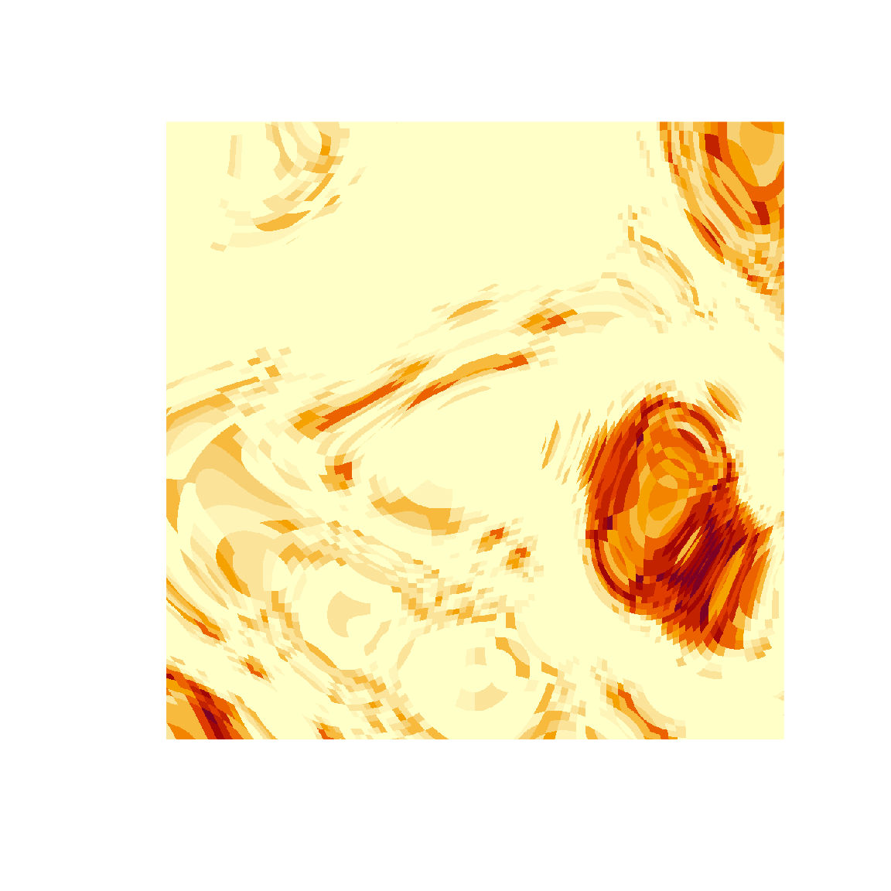
This terracing has the effect of levelling out some of the more bizarre features of the alien landscape we plotted earlier. Here’s what we get when we pass this terraced landscape to our render() function:
canvas |>
as.array(value = islands) |>
render(zscale = .01) 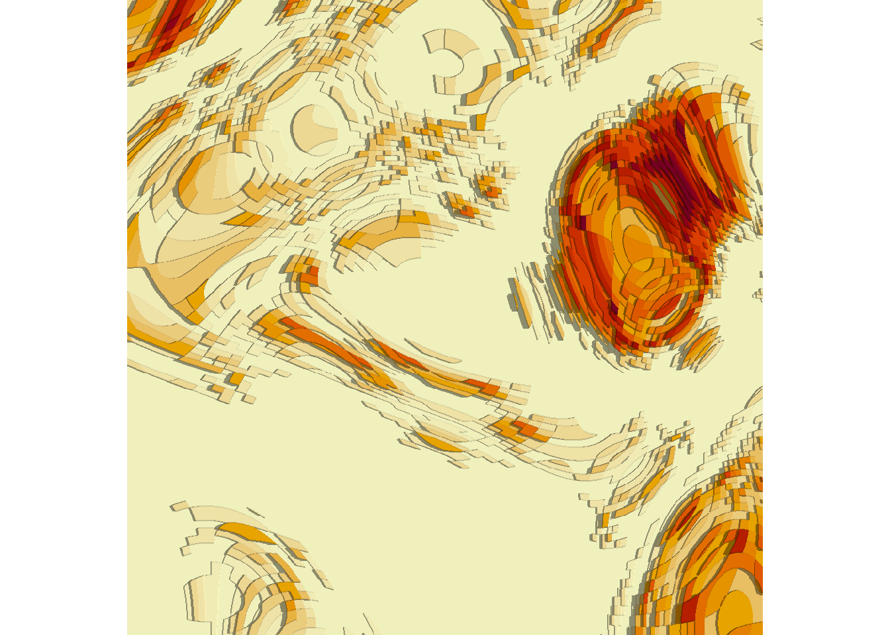
Ah, yes. Now we have something that feels closer to the Broken Lands pieces. The twists and contortions of the alien landscape are preserved, but they have now been forced onto a flatter, controlled geometry. The chaos of the alien land has been tamed. This is a domesticated variant. Safe for children and capitalists alike.
Be smooth
At some level I appreciate the stark feel of the previous piece, but even I am not enough of a masochist11 to truly enjoy the brutality of what I just did. All those intricate alien swirls have been flattened and erased so crudely that we are left with something a little too minimal for my tastes.
And so to the second artistic sleight-of-hand: some of the starkness of the last piece can be ameliorated if we apply noise processes in both the embedding space (i.e., noise is applied to curl_x and curl_y) and in the base space (i.e., to x and y). The code for that might look a little like this:
grid <- new_grid()
coords <- generate_curl(grid$x, grid$y, seed = seed)
canvas <- grid |>
dplyr::mutate(
curl_x = coords$x |> discretise(50),
curl_y = coords$y |> discretise(50),
noise_curl = generate_fancy_noise(curl_x, curl_y, seed = seed),
noise_base = generate_simplex(x, y, seed = seed),
height = (noise_curl + noise_base) |> discretise(50),
islands = dplyr::if_else(
condition = height < median(height),
true = median(height),
false = height
)
)
canvas |>
as.array(value = islands) |>
render(zscale = .01) 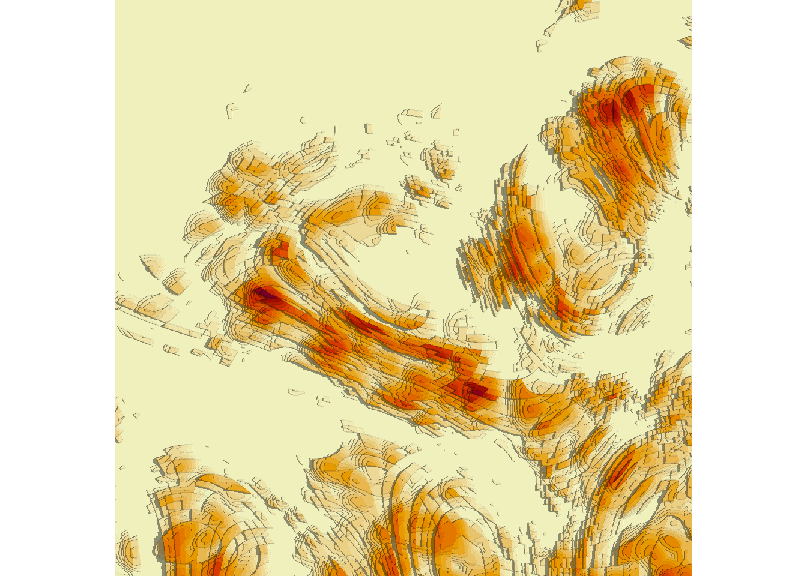
There is no principle to this. No deep underlying logic. It is simply an attempt to paper over the cracks, to smooth out some of the raw, sharp edges that were left over when we discretised in the first step.
There is probably a life metaphor here, but I choose not to look too closely.
Be chaotic
The final layer of trickery involves the colour palette. Throughout this post I’ve used the default “yellow and red” palette that image() uses to create heat map images, but the render() function I wrote at the beginning lets you choose your own colour scheme. For instance, let’s say I want the land to vary smoothly along a “teal and green” colour palette, while having the water stay white (or thereabouts). It’s surprisingly straightforward to do this, by passing a hand crafted vector of colours to render():
shades <- hcl.colors(50, "TealGrn")
shades[1] <- "#ffffff"
canvas |>
as.array(value = islands) |>
render(shades = shades) 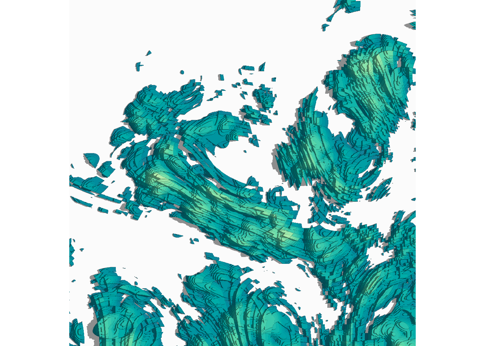
This is so very, very close to the style of imagery in the original Broken Lands series. The only thing missing is a slight feeling of chaos to the colours. If you scroll back up to the top of the post you’ll notice that the original images don’t quite adhere to the smoothly-varying-shades feel of a proper topographic map. The reason for this is that I shuffled the colour palette, so each “level” in the discrete map has a randomly sampled colour from the palette. Here’s some code that does precisely that:
generate_shades <- function(palette = "TealGrn", n = 50, seed = NULL) {
if(!is.null(seed)) {
set.seed(seed)
}
shades <- hcl.colors(n, palette)
shades <- sample(shades)
shades[1] <- "#ffffff"
shades
}
canvas |>
as.array(value = islands) |>
render(shades = generate_shades(seed = seed)) 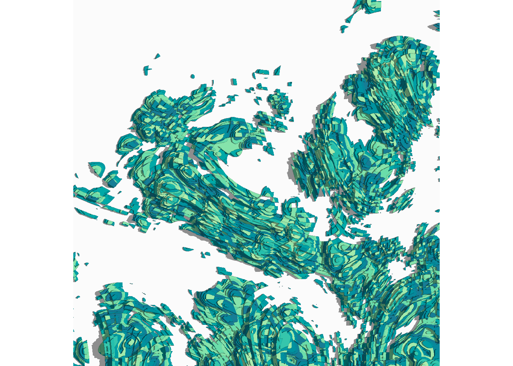
… and there it is. This version of the system isn’t precisely equivalent to the original, but it mirrors it in every respect that matters to me. The magic is all laid bare. There are no artistic secrets left in this system. Everything you need to know about these images is committed to text. Documented. Described. Codified.
I love the originals no less now that the magic is revealed. There is no art in secrecy.
Goodnight, sweet dreams
One day we’re gonna wake up laughing
Put on your dancing shoes
You won’t believe the tales I tell
That time, Danielle, ain’t mine to choose
Danielle, Danielle, Danielle
– Tex Perkins (and others, but whatever…)12
Much like the Broken Lands system itself,13 this post has a peculiar genesis. If you read the strange year post I wrote a few months ago, you’d be unsurprised to hear that I am attempting to square a few circles right now. Something broke – rather badly – and I’m trying to work out how to put the pieces together even knowing that the shattered parts can’t go back together in the shape they were before. Aspects to my life that were once central to my sense of self are scattered, and there are little slivers of glass laid everywhere – when I attempt to pick up one of the pieces from the floor I get cut deeply by those tiny transparent needles.
This post is one of those attempts. One of the pieces I need to pick up is my writing. The little cataclysm of 2022 broke my writing. I didn’t become a bad writer, or at least I don’t think I did. I hope I didn’t! Rather, I lost my sense of ownership over my writing. I felt like I was writing for others rather than myself, as if my blog were a product to be optimised rather than a thing I write because I love writing. It’s been some work trying to reconnect with the joy of writing for my own purposes.
And so to the point…
I wrote this post because I loved creating the artwork, and it’s written the way it is written because it makes me happy to write again. That’s it. It’s something I wrote because I want to own my words again. There’s no “take home message”. There’s no “call to action”. You can love it, or hate it, or ignore it. That’s okay. I didn’t write it for you – I wrote it for me.
Footnotes
Also Lev Grossman I guess, but honestly Hale Appleman’s delivery is so good that I cannot possibly attribute the quote to anyone except Eliot.↩︎
It’s actually a slightly different kind of object called a “long grid” but for now I’ll treat it like a tibble↩︎
Okay that’s not quite correct. The
as.array()method works here because we created this object by callingambient::long_grid()rather thantidyr::expand_grid()or theexpand.grid()function in base R. When you callexpand_grid()all you’re doing is creating a regular data frame (or tibble), and you can redefine the x and y values however you like. With a long grid object, however, you’re creating a somewhat different data structure that is required to form a grid. You can’t modify the x and y values the same way you would for a tibble, because those values are part of the underlying data structure. That seems like an odd restriction the first time you encounter it, but the fact that the grid itself is immutable is what makes it trivially easy to callas.array()in this context.↩︎Easter egg for the three people who know the reference: I rather suspect that what I’ve done in this section is create the artistic version of the “linear ballistic accumulator” model of human choice behaviour, where my original system was a full fledged diffusion model. Happily for all concerned, neither Scott nor Roger are going to read this post.↩︎
Fine. Yes, if you look closely at the code you can see I’m doing more than simply applying a curl field. But please… allow me some latitude here. This is a blog post not a dissertation.↩︎
Presumably using some magic spray paint that coats every layer of the folded fabric, not just the topmost layer!↩︎
Okay yes the metaphor is a bit strained, but it’s the best I can think of when what I’m actually doing is constructing a surjective mapping from the base space to the embedding space, adding noise to the mapped values, and then using “magic” to pull back to the base space because I’m a good girl who doesn’t throw away the original values when she performs a many-to-one trick.↩︎
Yes I’m aware that the “many to one” jokes write themselves at this point but as I mentioned previously I am a good girl so I shan’t continue this line of thought.↩︎
There is an obvious metaphor for the queer experience of living in a world defined by cisheteronormativity here, but I’ll let you flesh out the rest of the mapping on your own. You’re a clever person, you know how to read between the lines, right?↩︎
I grew up in a small mining town, four hours drive from the nearest city (sort of: technically it was the town founded around the refinery, and the mines were about an hour away). It was traumatic, and there are not enough drugs in the world to make me elaborate.↩︎
Which, let’s be frank, is saying quite a lot.↩︎
A note for foreigners: if you are an Australian male-attracted person of a certain age, you immediately understand. It doesn’t matter if you’re a bisexual, a straight woman, or a gay man. It doesn’t matter if you got hooked by Beasts of Bourbon, or by Cruel Sea, or by the solo acts. There’s nothing specific to it. There are no invariants to uncover except Tex Perkins.↩︎
The very earliest version of the system appeared as a throwaway piece in the quarantine moods series, then became frozen in the ice floes system, re-emerged as the fractured terrain section in the Art From Code workshop, and then eventually became its own thing.↩︎
Reuse
Citation
BibTeX citation:
@online{navarro2023,
author = {Navarro, Danielle},
title = {Shattered Landscapes},
date = {2023-03-13},
url = {https://blog.djnavarro.net/posts/2023-03-13_shattered-landscapes},
langid = {en}
}
For attribution, please cite this work as: